Business de l’ombre:comment le groupe Orllatiaccapare des terres agricoles
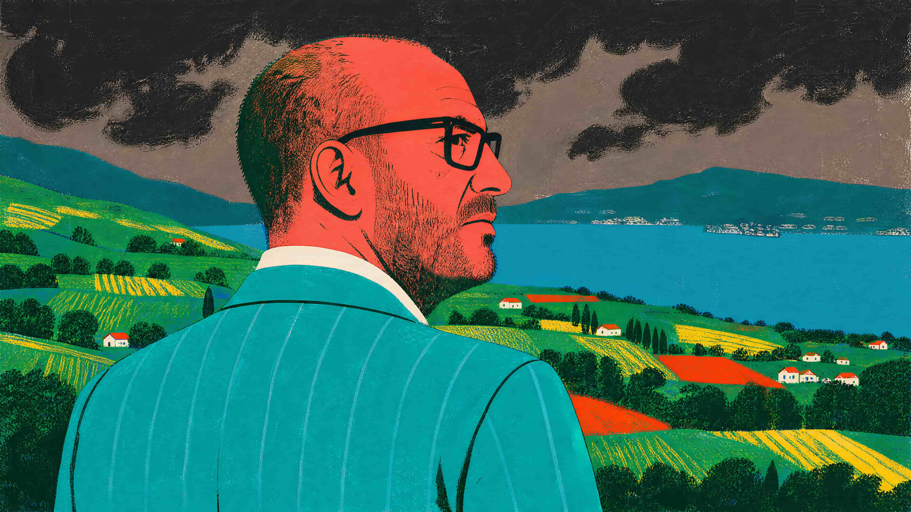
En s’appuyant sur des agriculteurs placés dans des sociétés anonymes, le promoteur vaudois, également actif dans les décharges et le béton, contrôle des parcelles qui devraient être réservées à des paysans exploitant eux-mêmes leurs terres. Avec des avantages stratégiques et financiers à la clé.
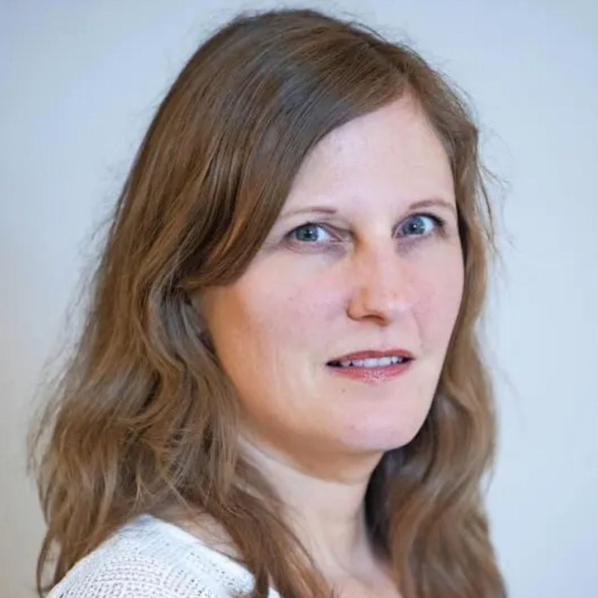
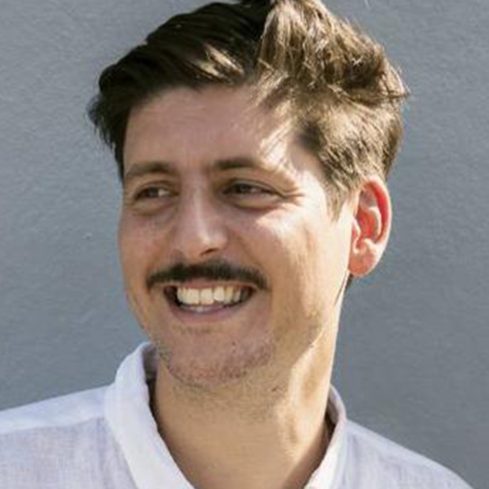
Tout est parti d’un bruit. Le genre d’info qui galope de village en village, et que les gens répètent avec un regard lourd de sous-entendus: «Vous savez quoi? Le neveu d’Orllati a fait son CFC d’agriculteur». Orllati / agriculture. A priori, deux mondes que tout oppose. D’un côté, l’un des plus gros acteurs de la construction romands, actif par ailleurs dans la promotion immobilière, la géothermie, les décharges et le béton. De l’autre, cette pratique ancestrale qui consiste à travailler la terre pour nourrir le peuple.
Mais dans un minuscule pays blindé de monde, où certains ne voudraient même plus laisser entrer personne, la frontière entre ces deux univers est aussi poreuse que la brique ou le ciment. Pour loger les gens, il faut construire. Et pour construire, il faut faire de la place: creuser, détruire — donc générer des déchets. C’est ici que les terres agricoles entrent en jeu: à la campagne, on trouve des lieux où ouvrir des gravières (pour faire du béton) et des décharges (pour enfouir ce qui sort des chantiers). Deux activités qui peuvent s’avérer extrêmement rentables. Dans certains cas, on peut aussi tabler sur du long terme: un changement d’affectation, qui transforme des terres agricoles, achetées à très bas prix, en poule aux œufs d’or — une zone constructible.
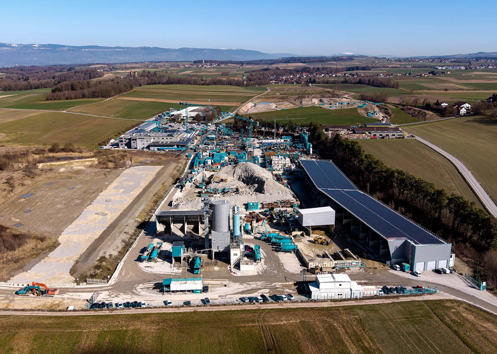
Nous avons arpenté le canton de Vaud, de parcelle en parcelle et de ferme en ferme. Notre constat? Alors qu’elles sont censées être protégées légalement, les terres agricoles sont à la merci d’entités extérieures au monde paysan. En s’appuyant sur des agriculteurs placés dans des sociétés anonymes, un groupe comme Orllati arrive à contrôler des terrains qui, selon l’esprit de la loi, devraient rester entre les mains de cultivateurs exploitant directement leurs terres.
Cela signifie que les gardes-fou mis en place par l’État ne fonctionnent pas. À commencer par la Commission foncière rurale (CFR I), cet organisme à qui l'État délègue la tâche d’autoriser ou non l’achat de terres agricoles. À la suite de nos découvertes, nous lui avons fait parvenir de nombreuses questions, auxquelles elle n’a pas répondu. Dans les campagnes, les manœuvres pour l’achat des terres les plus stratégiques et prometteuses financièrement se font au détriment des petits paysans, qui n’en finissent pas de perdre du terrain, et de notre système démocratique. Voici notre enquête.
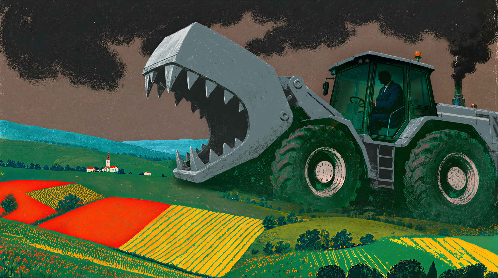
Gros-de-Vaud : «Le groupe Orllati a un boulevard devant lui»
Gros-de-Vaud : «Le groupe Orllati a un boulevard devant lui»
C’est une cuisine immaculée comme on en trouve souvent dans les fermes vaudoises, avec la machine à café qui ronronne par intermittence. Assis à l’autre bout de la table, Eric* secoue la tête, ses grandes mains aux ongles terreux croisées devant lui: «Orllati, c’est le huitième conseiller d’État. J’insiste, n’écrivez pas mon nom. Sinon, je ne pourrai plus jamais avoir une exploitation agricole dans le canton.»
« Orllati, c’est le huitième conseiller d’Etat. J’insiste, n’écrivez pas mon nom. Sinon, je ne pourrai plus jamais avoir une exploitation agricole dans le canton. »— Eric, agriculteur (nom d'emprunt)
Aux alentours, le paysage du Gros-de-Vaud est morose en ce vendredi de février. Du brun et du vert délavés, un ciel bas au-dessus des chemins boueux, quelques restes de neige. Si nous sommes venus voir Eric, c’est parce qu’il connaît bien le groupe Orllati. Comme plusieurs autres paysans, il a côtoyé Avni, le fondateur et administrateur délégué de la société, dans le cadre de la vente ou de la location de terres agricoles.
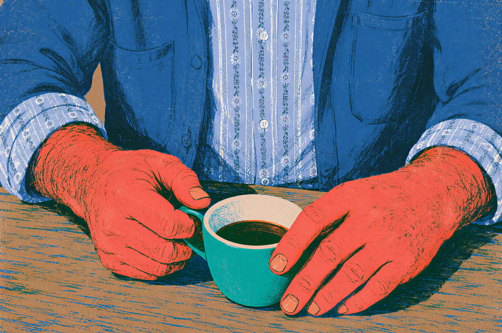
Actif dans la construction, la promotion immobilière, les décharges, le béton et la géothermie, le groupe que dirige Avni Orllati est l’acteur le plus puissant du canton de Vaud dans son domaine, avec 400 millions de francs de chiffre d'affaires. À ses débuts dans l’immobilier, l’entreprise sise à Bioley-Orjulaz s’était spécialisée dans la reconversion de friches industrielles. Comme celle de l’ancien laboratoire Kodak de Renens, transformé il y a une quinzaine d’années en un espace mixte qui abrite, entre autres, le Ministère public vaudois. Mais alors que le Canton s’inquiète de la raréfaction des surfaces dédiées aux activités artisanales et industrielles, le groupe Orllati a opéré un virage vers l’arrière-pays. Il y a réalisé d’importants projets immobiliers, dont l’écoquartier de Gruvatiez à Orbe, inauguré en 2021.
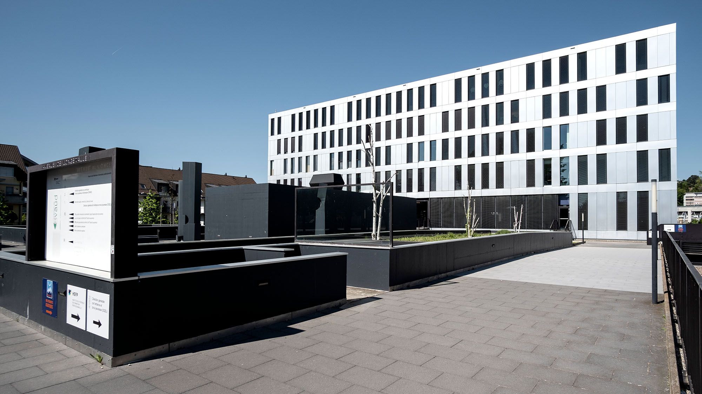
Pour une entreprise avec un tel profil, certains terrains situés en zone agricole valent de l’or. On y trouve du gravier nécessaire à la fabrication du béton, des trous où enterrer les déchets des chantiers, des futurs sites où construire en cas de changement d’affectation.
À la campagne, les terres cultivables et leurs fermes appartiennent par définition aux agriculteurs. Sauf exceptions, ces derniers sont censés se les vendre de l’un à l’autre, avec l’aval de la Commission foncière rurale (CFR I), l’organisme chargé de délivrer les autorisations pour l’acquisition des terrains situés en zone agricole. Une fois de plus, notre enquête amène des questionnements sur cette structure et son manque de contrôle.
Toutes les activitésde l’empire Orllati
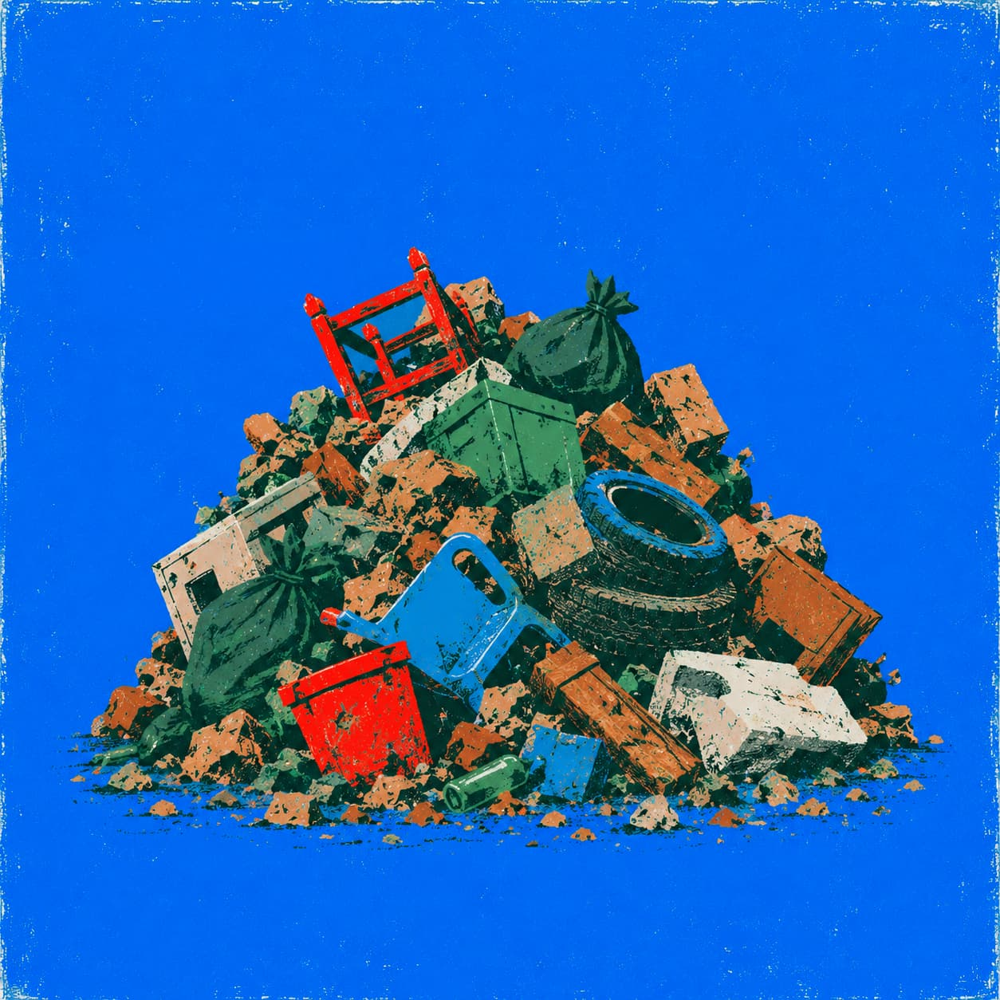
Décharges
En raison de son explosion démographique, le canton de Vaud ne sait plus que faire de ses déchets de chantier. Cinq des 28 décharges vaudoises sont exploitées à ce jour par Orllati, qui compte encore s’étendre avec des projets à Chavornay et à Daillens/Oulens. Le second doit aussi accueillir des scories de l’usine d’incinération lausannoise Tridel.
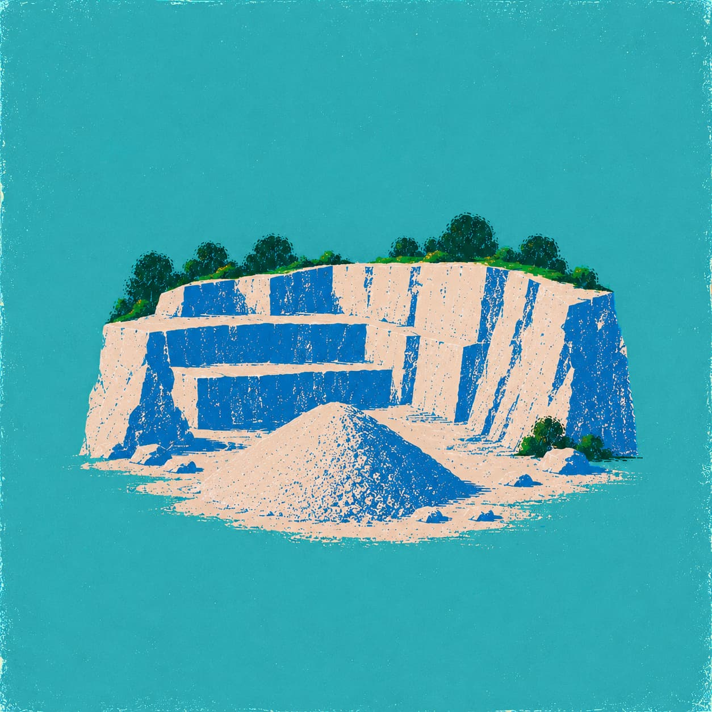
Gravières
Le gravier, que l’on trouve sous les forêts et les champs, est un élément clé de la composition du béton. C’est dire si les sites qui en contiennent sont précieux pour un groupe comme Orllati, qui possède une centrale à béton. Mais les citoyens se rebiffent comme récemment à La Chaux, près de Cossonay.
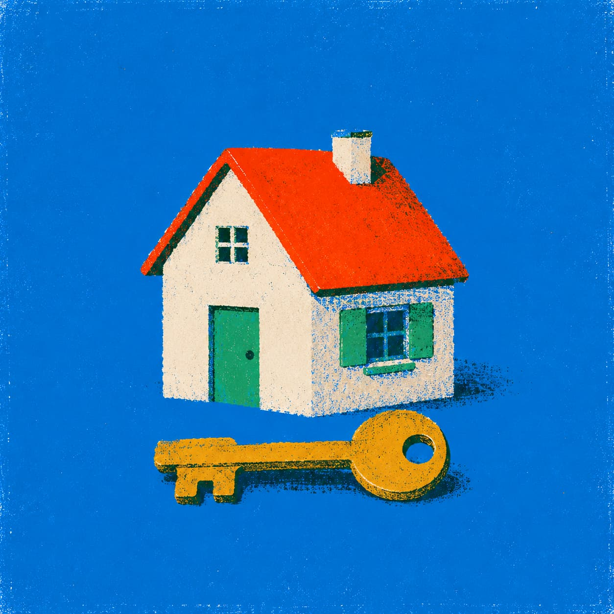
Promotion immobilière
Le groupe Orllati développe des projets immobiliers et des quartiers entiers, dans le canton de Vaud et ailleurs. C’est lui qui porte notamment un projet de tour arborisée de 117 mètres de haut à Chavannes-près-Renens ou le campus Plein Sud à Estavayer, dans le canton de Fribourg.
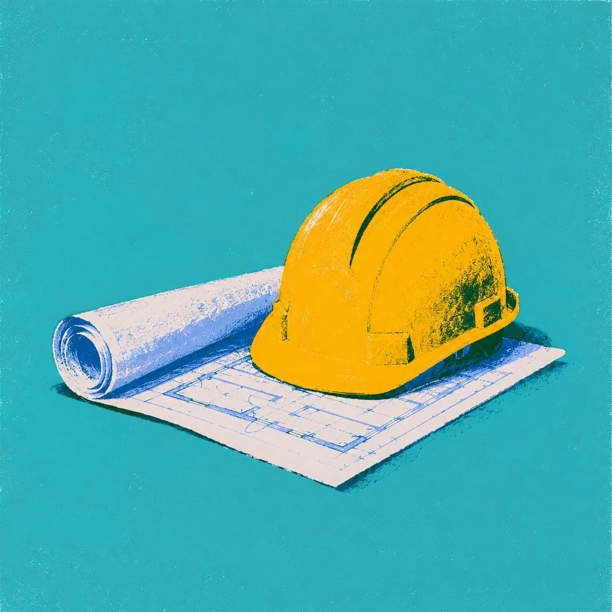
Construction
Arrivés en Suisse à l’âge de 14 ans, les frères jumeaux Avni et Basri Orllati ont commencé à travailler dans la démolition en 1995, avant d’acquérir des machines de chantier et se spécialiser dans le gros œuvre et le génie civil. Ce n’est que dix ans plus tard qu’ils acquièrent des terrains en vue de la promotion immobilière.
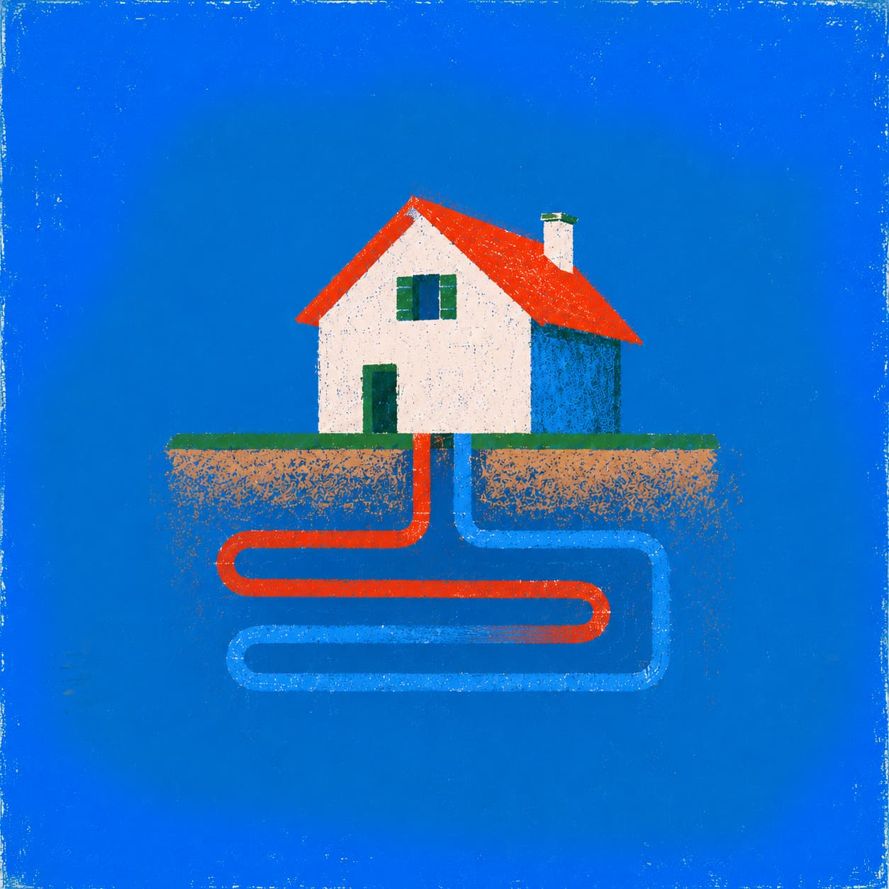
Géothermie
Le canton de Vaud concentre le plus grand nombre de projets géothermiques subventionnés par la Confédération. Dans ce domaine en plein essor, Orllati figure en pole position. En mai 2026, le groupe a annoncé l’investissement de 4,25 millions de francs dans un forage exploratoire à Assens.
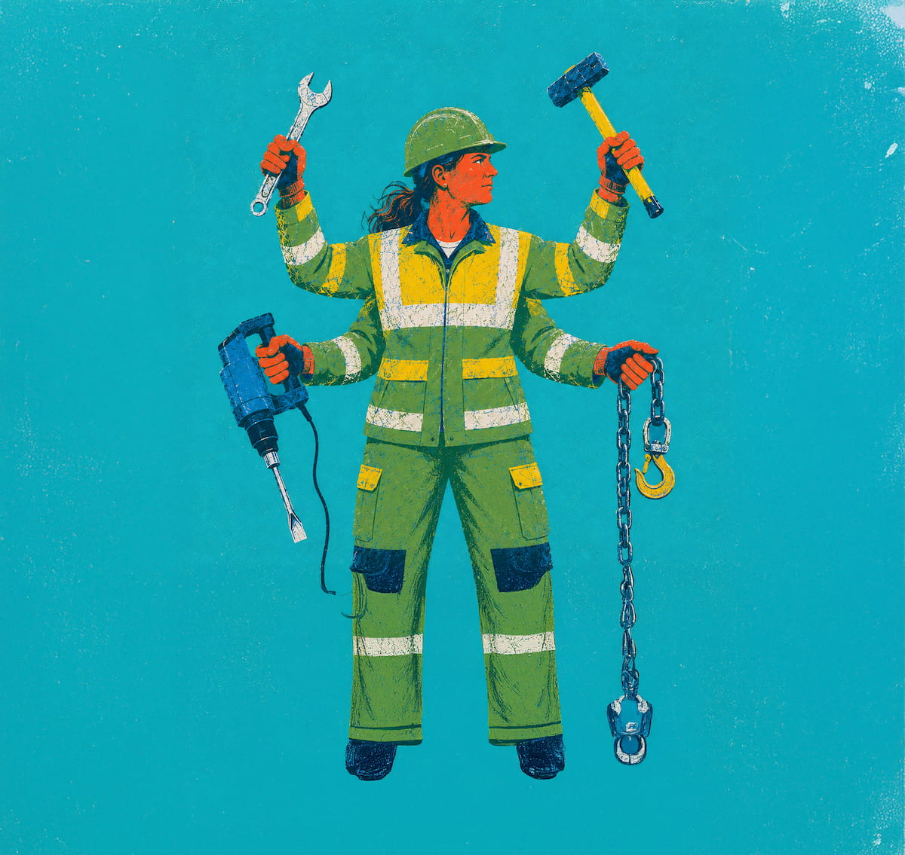
Activités annexes
En sus des autres secteurs, le groupe Orllati est également actif dans le désamiantage, le métal et les travaux ferroviaires. À Bioley-Orjulaz, il gère en outre une plateforme de lavage des matériaux d’excavation pollués. En 2020, il a aussi annoncé la création d’un centre romand pour la valorisation de scories, en partenariat avec Cridec et Tridel.
Dans ce monde-là, le silence est un second langage: à quatre reprises au moins, des paysans qui avaient accepté de nous rencontrer ont annulé le rendez-vous à la dernière minute, estimant qu’il était trop dangereux pour leurs affaires de s’exprimer, même sous le couvert de l’anonymat.
«J’ai un partenaire qui représente plus d’un demi-million de francs par année pour moi. Il m’a dit: si tu parles du groupe Orllati aux journalistes, je fais plus affaire avec toi. Je risque la faillite», nous a expliqué l’un d’entre eux — un élu au niveau local qui avait pourtant beaucoup de choses à raconter. Il lâche, malgré tout: «Dans ma région, 60% des agriculteurs arrivent en bout de course dans les cinq prochaines années. D'ici à dix ans, j'estime que le groupe Orllati possédera 15% à 20% des terres vaudoises. Il a un boulevard devant lui».
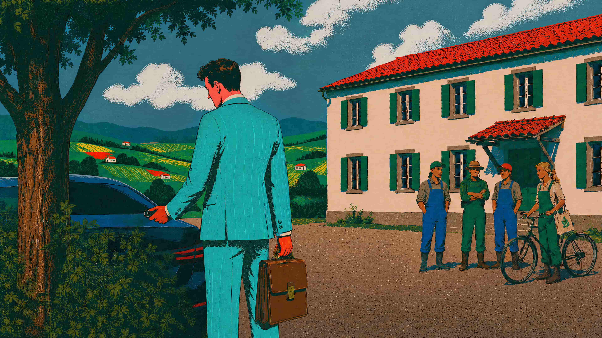
Moudon : «On se demandait ce que le neveu d’Avni Orllati allait faire d’un CFC d’agriculteur»
Moudon : «On se demandait ce que le neveu d’Avni Orllati allait faire d’un CFC d’agriculteur»
Dans ce contexte que personne ne semble ignorer, une anecdote fait grenouiller la campagne depuis des mois, de la Côte au Gros-de-Vaud. «Allez voir au village, les paysans ne parlent que de ça», assure Eric. Parmi les soixante diplômés en agriculture du centre de formation de Granges-Verney en juin 2025, un nom clignote comme sur un fond turquoise. C’est celui du neveu d’Avni Orllati. Ce jeune père de famille travaillait il y a peu en tant que logisticien dans l’entreprise familiale.
Dans le milieu paysan, le profil est insolite: «Évidemment qu’on en parlait. On se demandait ce qu’il allait bien pouvoir faire d’un CFC d’agriculteur», souffle un diplômé de la même volée. «J’ai essayé de le cuisiner, raconte un autre. C’est quelqu’un d’hyper sympa, avec de l’entregent. Il arrivait aux cours avec une belle voiture et il disait qu’il avait envie d’une vie plus simple, proche de la terre. Je pense qu’il était dans une vraie démarche de compréhension de la profession, mais personne n’a réussi à en savoir plus. Il me semble qu’il n’avait pas de projet précis pour la suite.»
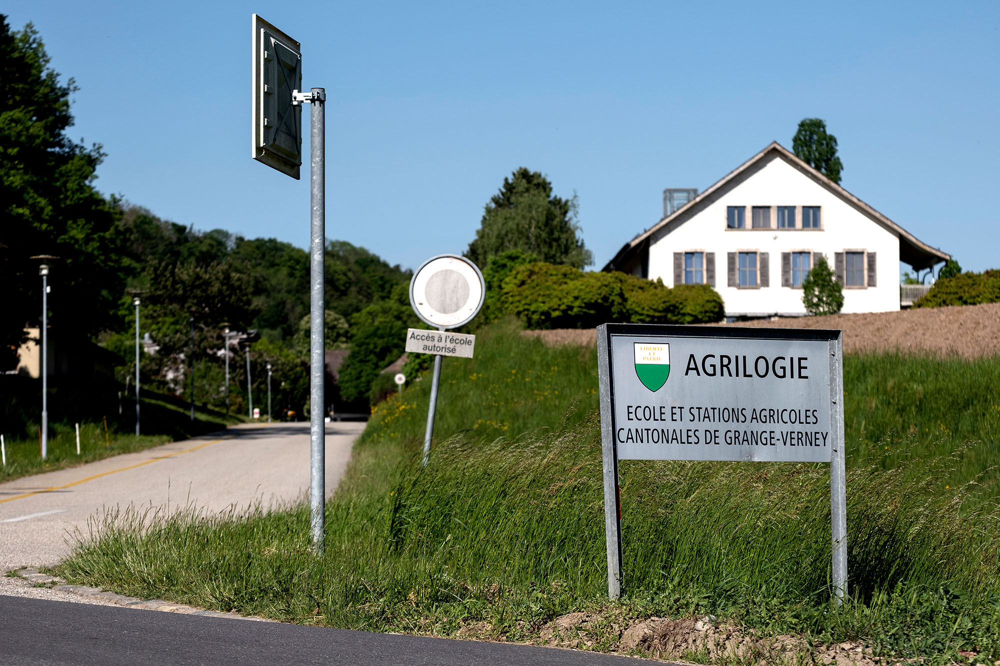
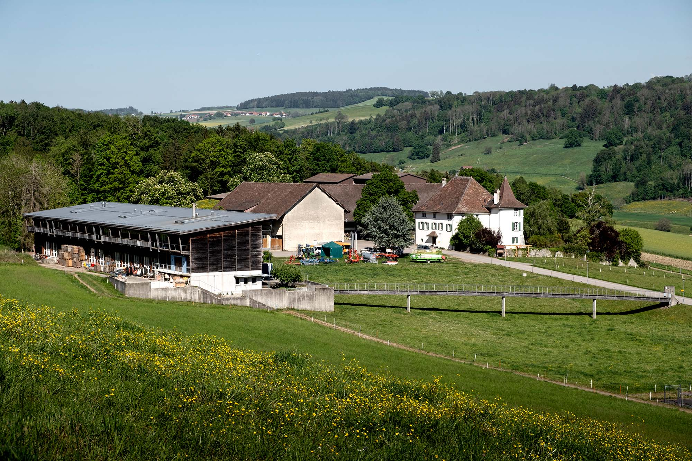
En vue de l’obtention de son CFC, le neveu d’Avni Orllati a effectué une partie de son apprentissage chez un jeune agriculteur établi non loin de la frontière fribourgeoise. Le jeune homme, qui n’a pas répondu à nos questions, a ensuite terminé sa formation chez Jacques Gottofrey, un ancien conseiller communal UDC, agriculteur à Echallens et ex-président de l’association romande de lutte suisse. Contacté, il explique ne plus avoir eu de nouvelles de son ancien stagiaire par la suite.
« Il arrivait aux cours avec une grosse voiture et il disait qu’il avait envie d’une vie plus simple, proche de la terre. Je pense qu’il était dans une vraie démarche de compréhension de la profession, mais personne n’a réussi à en savoir davantage »— Un diplômé de la même volée
Quant à la première partie de son apprentissage, «le neveu», l’aurait effectuée chez un certain Emmanuel Crausaz, selon plusieurs sources concordantes. Nous retrouverons le nom de cet agriculteur fribourgeois, connu pour avoir présidé jusqu’en 2019 l’association fribourgeoise de lutte suisse (encore elle), tout au long de notre enquête. En effet, Emmanuel Crausaz, qui n’a pas souhaité nous parler, joue un rôle clé dans l’accès du groupe Orllati à des terres agricoles.
De 2013 à 2018, il a aussi administré la société Orllati environnement SA, spécialisée dans l’exploitation de gravières et déchets à Fribourg. Comme l’avait raconté le média heidi.news en 2020, cet homme à l’imposante carrure, qui affiche des lunettes noires de bodyguard sur son profil LinkedIn, allait rendre visite à des agriculteurs en compagnie de l’ancien géologue cantonal pour les convaincre de signer des conventions avec Orllati en vue de l’extraction du gravier présent sur leur terrain.
Arnex-sur-Nyon : «À cinq francs le mètre carré, ça lui coûte moins cher d’acheter les terrains»
Arnex-sur-Nyon : «À cinq francs le mètre carré, ça lui coûte moins cher d’acheter les terrains»
Si l’obtention d’un CFC d’agriculteur par le «neveu de» suscite autant d’interrogations, ce n’est pas juste parce que le jeune homme est hors sérail. Dans les villages, le groupe co-fondé par son père est connu pour faire appel à des paysans, qui lui permettent de contrôler des terres en vertu de la Loi sur le droit foncier rural (LDFR). Dans le cadre de la révision de cette loi, le Conseil fédéral a pourtant été clair: il veut «renforcer le principe de l’exploitation à titre personnel, selon lequel les immeubles agricoles doivent être exploités par les personnes qui les ont acquis.»
La recette du contrôle desterres agricoles
Les ingrédients
- 100’000 francs
- Un ou deux paysans avec un numéro d’exploitant
- Un réseau d’informateurs
- Un notaire coulant
- Des membres de Commission foncière aux petits oignons
- Des autorités cuites au bain marie
- Une louche de temps
Les étapes
Comment mettre la main sur des terres agricoles sans être agriculteur, en cinq étapes et sept ingrédients.
Ce garde-fou est censé éviter que les terres agricoles ne fassent l’objet de spéculation foncière ou soient détournées de leur usage. Mais apparemment, il est facile de s’asseoir dessus, du moins dans le canton de Vaud. Comment? En s’adjoignant les services d’agriculteurs avec des parts majoritaires dans des sociétés anonymes dont le but est l’agriculture.
Lorsque les actionnaires majoritaires de la société acquéreuse sont officiellement des exploitants agricoles à titre personnel, ils peuvent en effet acheter directement les terrains. Un non-exploitant, lui, devrait activer l’une des exceptions à la Loi sur le droit foncier rural, qui sont assez strictes. Passer par des paysans permet donc au groupe Orllati de s’assurer une maîtrise du foncier sur le long terme, en achetant les terres au prix que payeraient des agriculteurs.
« Toutes les opérations du Groupe Orllati en lien avec des parcelles agricoles interviennent dans le respect de la LDFR, des procédures y relatives et sont soumises aux autorités d’application de cette loi »— Le groupe Orllati
L’exploitant à titre personnel: un principe sacré
À la suite de notre enquête, nous avons envoyé de nombreuses questions au groupe de Bioley-Orjulaz. Voici ce qu’il nous a répondu: «Dans le cadre des activités du Groupe Orllati liées aux gravières et aux décharges, pas un m2 cultivable n’a été soustrait à l’agriculture sans délivrance préalable d’un permis d’exploiter en bonne et due forme par les autorités compétentes. Par ailleurs, toutes les opérations du Groupe Orllati en lien avec des parcelles agricoles interviennent dans le respect de la LDFR, des procédures y relatives et sont soumises aux autorités d’application de cette loi.»
L’exploitant à titre personnel: un principe sacré
Dans le district de Nyon, à la frontière avec le canton de Genève, 17 hectares environ (l’équivalent de 24 terrains de foot) de surface agricole situés le long de l’autoroute sont propriété d’une société appelée Porla, dont les buts sont liés à l'agriculture. La SA est présidée par Miguel Sanchez, qui figure également au conseil d’administration du groupe Orllati. Cet acteur-clé de l’entreprise de Bioley-Orjulaz, qui était auparavant directeur chez Holcim, partage la gestion de Porla SA avec trois paysans.
Par une après-midi de mai écrasée de soleil, nous nous rendons dans la région, où différentes sources proches du dossier nous confirment que c’est bien le groupe Orllati qui est (indirectement) propriétaire des parcelles en question. Comme dans d’autres exemples, des agriculteurs auraient eu le droit de préemption (priorité pour l’achat, ndlr), mais pas les fonds. «Orllati est correct», souffle un paysan, que nous croisons près de sa ferme. «Il nous rafle les terres sous le nez, mais il ne les cultive pas.» Un autre ajoute: «J’ai fait un deal parce que ça m’arrangeait. Je ne vais pas mettre un coup de pied dans la fourmilière maintenant.»
Prix des terrains: l’exemple genevois
Terrain à bâtir (Genève 2025)
Fr. 540.- / m²540 francs le mètre carré: sortir une parcelle de la zone agricole multiplie sa valeur par 67,5. Le déclassement est le jackpot foncier — d'où l'intérêt d'acheter des terres à 8 francs… et d'attendre.
Prix maxima licites 2025 · Commission foncière agricole, Genève
L’entreprise Orllati ne cultive pas les terres, mais elle projetterait d’en tirer profit autrement. La zone où se situent les parcelles en question figure dans la planification cantonale 2024 pour une décharge de matériaux d’excavation (déchets de chantier) pas ou faiblement pollués. À ce jour, rien n’a encore été mis à l’enquête. Mais l’emplacement est stratégique pour le groupe de Bioley-Orjulaz, qui est au coude à coude dans le secteur avec un autre exploitant de décharge, la société Ronchi basée à Gland. Orllati projette en effet la construction de six immeubles sur une vaste parcelle située au nord de Nyon, ce qui promet de générer quantité de terres d’excavation.
Une décharge à 40 millions
«À cinq francs le prix licite au mètre carré, ça coûte moins cher à Orllati d’acheter les terrains que de payer les propriétaires au mètre cube durant toute l’exploitation de la décharge», commente un paysan. «Et puis, une fois que le trou est bouché, les terres pourront être cultivées à nouveau.» Le prix licite est le maximum qu’un acheteur peut payer pour un bien agricole.
Orllati exploite à ce jour cinq des 28 décharges en activité dans le canton de Vaud. Cela fait de lui un acteur majeur du secteur, qui compte une multitude de petits exploitants. Le groupe de Bioley-Orjulaz va encore s’étendre, avec des projets à Chavornay et à Daillens/Oulens. Et pour cause: en raison de son explosion démographique, Vaud ne sait plus que faire de ses déchets de chantier. «Tous les terrains qui ont une cuvette intéressent Orllati, relève un agriculteur de Lavaux. C'est une très bonne affaire de les remplir.»
Selon nos calculs, pour une décharge telle que celle qui figure dans la planification à Arnex-sur-Nyon, l’exploitant devrait payer au minimum 2,5 millions de francs aux propriétaires s’il louait les terres.
Étant donné la concurrence féroce qui règne dans ce secteur, comme dans celui des gravières, l’acquisition des terrains est nettement plus avantageuse financièrement, mais aussi plus sûre, car elle permet une planification sur le long terme.
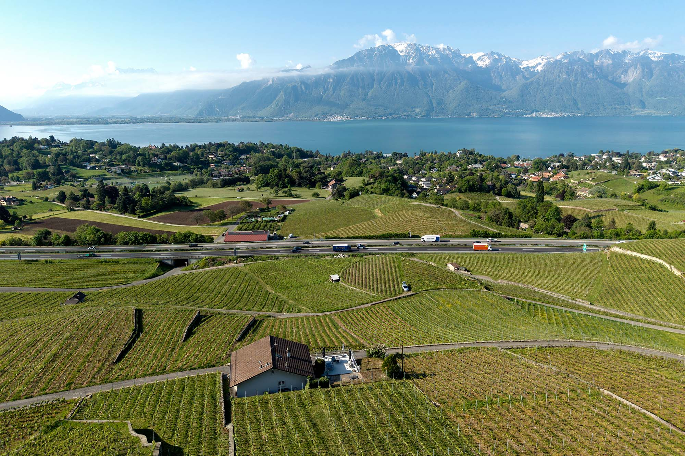
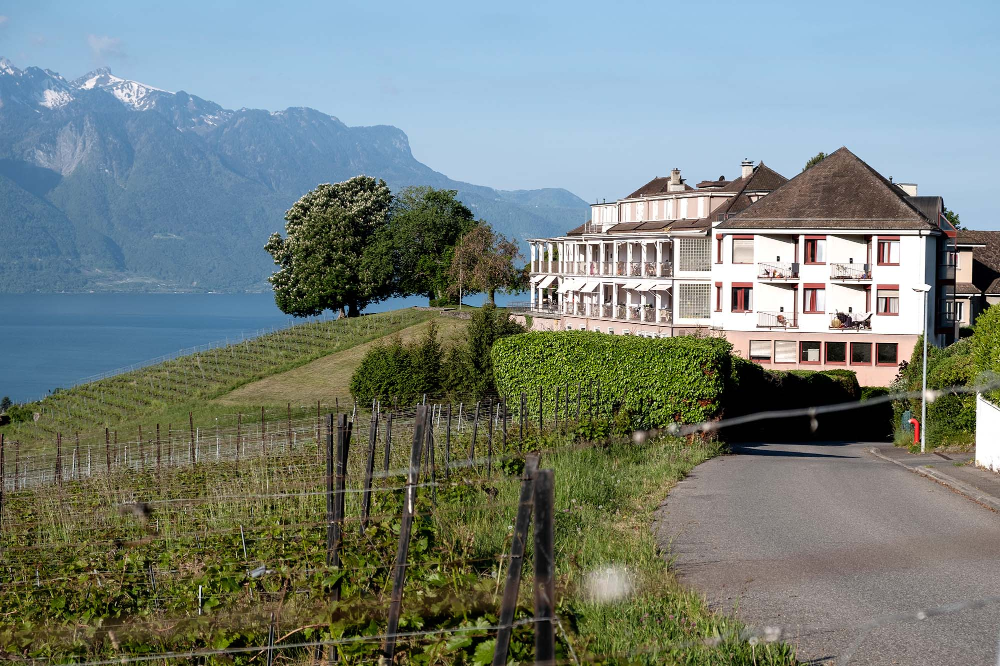
De plus, lorsque les actionnaires majoritaires de la société acquéreuse sont officiellement des exploitants à titre personnel, ils peuvent acheter directement les terrains. «Pour Orllati, un numéro d’exploitant agricole, c’est le Graal», résume un connaisseur du dossier. Un non-exploitant pourrait aussi prétendre à l’achat de parcelles situées en zone agricole, notamment s’il n’y a pas de paysans sur le coup.
C’est ce qu’avait fait Orllati pour des parcelles situées à Blonay dans le cadre de l’acquisition de l’ancienne clinique de Mottex, comme Blick l’avait raconté l’an dernier. Mais selon nos informations, Orllati Real Estate avait alors dû convaincre quatre agriculteurs, qui s’étaient portés acquéreurs, de retirer leurs offres en échange d’un autre terrain ou de la possibilité d’exploiter provisoirement les parcelles en question.
Avec des agriculteurs dans la poche, exit la concurrence, les contreparties et les appels d'offres publiés dans la FAO. Autrement dit, du pain bénit.
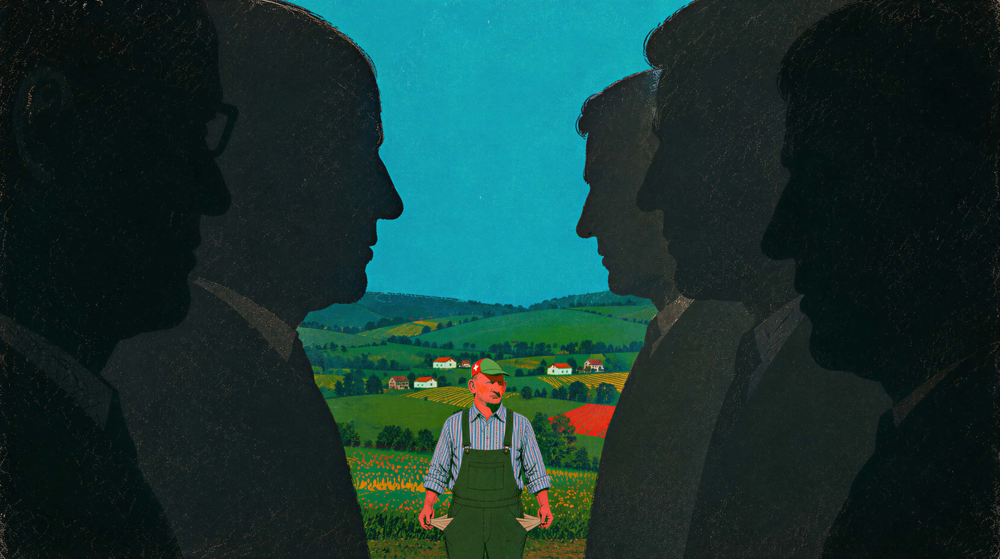
Gros-de-Vaud : «Beaucoup de paysans vivent une crise identitaire»
Gros-de-Vaud : «Beaucoup de paysans vivent une crise identitaire»
Sauf que dans ces histoires, les dindons de la farce sont souvent les paysans. En arrière-plan de ces achats, on trouve en effet cette fraction du monde agricole qui se débat avec des dettes, de la paperasse, des hypothèques, et qui en plus perd les terrains censés rester entre ses mains. «Les voleurs, ce sont Migros, la Coop et l’État», assure un agriculteur rencontré près de Nyon. «On importe, on importe, et les paysans ne tournent plus. On est obligés de trouver des combines pour pas crever».
Un tableau sombre que l’on retrouve en filigrane d’une autre société, Henny Frères SA, du nom de deux frères du Gros-de-Vaud que nous nommerons Roger* et Victor*. Selon ses statuts, les actions de cette société anonyme ne peuvent être détenues majoritairement que par des exploitants agricoles ou viticoles à titre personnel. Le transfert des actions et certaines modifications des statuts sont soumis à l’approbation de la Commission foncière rurale, chargée d’appliquer la Loi sur le droit foncier rural.
Selon nos informations, Roger était un ancien sous-traitant d’Orllati. Pas assez riche pour acheter un domaine, lui et son frère auraient accepté d’entrer dans Henny frères SA en 2016 déjà, avec 50% des actions chacun. C’est Orllati qui aurait avancé le capital de départ. En 2019, Roger est parti et a été remplacé au registre du commerce par Emmanuel Crausaz, le lutteur aux lunettes noires et à la carrure de bodyguard que nous avons rencontré dans le premier chapitre. Depuis 2021, ce dernier signe individuellement au sein de cette société, qui possède une vingtaine de parcelles agricoles sur des sites stratégiques.
Quant au second frère, Victor, il a présidé Henny Frères SA depuis le départ de Roger. Après plusieurs appels du pied pour pouvoir quitter la société, il aurait donné sa démission, pour être remplacé par le neveu d’Avni Orllati. Selon nos sources, l’entrée de ce dernier dans la société serait en stand-by. Contactés, les deux frères ont refusé de répondre à nos questions. «Je ne fais plus partie de la société», nous assure Victor, dont le nom figure pourtant toujours au Registre du commerce. «Pour moi, c’est de l’histoire ancienne», explique Roger avant de raccrocher.
« Chez les Orllati, on écoute les paysans, on s’intéresse à leur réalité »— Un jeune agriculteur
Outre les difficultés financières, un certain nombre de paysans se démènent avec une piètre image d’eux-mêmes, ce qui les rend vulnérables relationnellement, assure un jeune diplômé en agriculture: «Beaucoup vivent une crise identitaire, ils ne se sentent pas reconnus. Chez les Orllati, on les écoute, on s’intéresse à leur réalité. Ils ont les moyens et l’aura pour emmener une partie du monde agricole derrière eux.»
Au cours de notre enquête, nous avons identifié au moins trois sociétés qui fonctionnent sur le même principe. Leur point commun: en dehors des «émissaires d'Orllati» comme Emmanuel Crausaz ou Miguel Sanchez, les agriculteurs qui coadministrent les sociétés n’ont pas l’air au courant de ce qui s’y passe. Selon nos informations, l’un d’entre eux était même convoqué chez le notaire juste avant la signature pour l’achat de terrains, sans vraiment savoir de quoi il retournait. Interrogé, le notaire en question nous a expliqué qu’il était à la retraite, avant de nous conseiller d’en «parler directement avec le groupe». Comprendre l’entreprise Orllati elle-même.
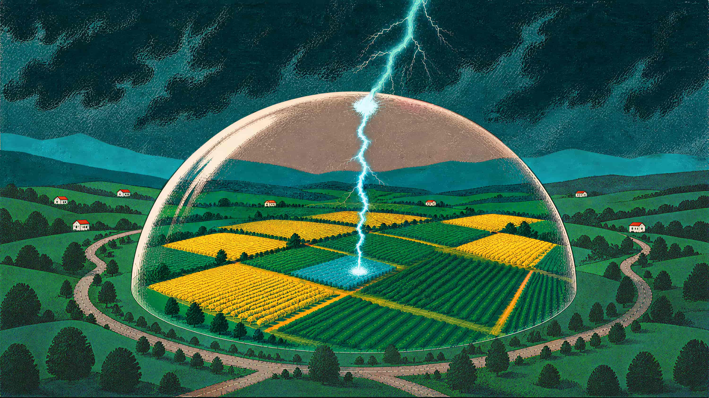
Chardonne : «En principe, les parcelles sont doublement protégées en Lavaux»
Chardonne : «En principe, les parcelles sont doublement protégées en Lavaux»
Quittons à présent le Gros-de-Vaud pour la Riviera, où les villages de Chardonne et Corseaux offrent une vue sublime sur le Léman. Avec, au premier plan, les vignobles en terrasse d’où coule le «joli vin blanc» si cher au cœur des Vaudois. Un décor de carte postale qui se paie cher: dans la région, les prix de l’immobilier sont plus élevés que la moyenne cantonale de près de 30%, selon une étude de la BCV de novembre 2025.
Sous l’autoroute A9, à cheval entre les deux villages, Henny Frères SA est l’heureuse propriétaire au registre foncier de six parcelles offrant un dégagement spectaculaire sur la plaine du Rhône. Autrefois occupées par des maraîchers, d’immenses serres y sont laissées à l’abandon depuis des années, au point que de la végétation pousse à l’intérieur. Juste en face, un petit immeuble a été rénové il y a deux ans pour devenir habitable, malgré sa situation en dehors de la zone à bâtir. Le reste des terrains est composé de parcelles agricoles et viticoles, situées dans la zone de Lavaux, qui est inconstructible et protégée dans la Constitution en tant que paysage exceptionnel, selon la volonté du peuple vaudois.
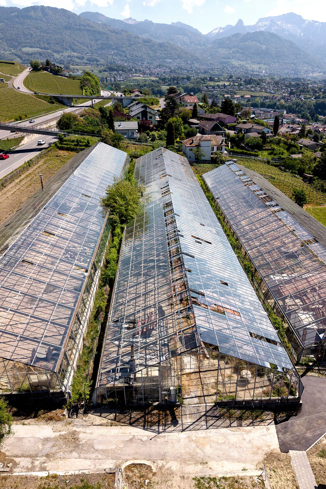
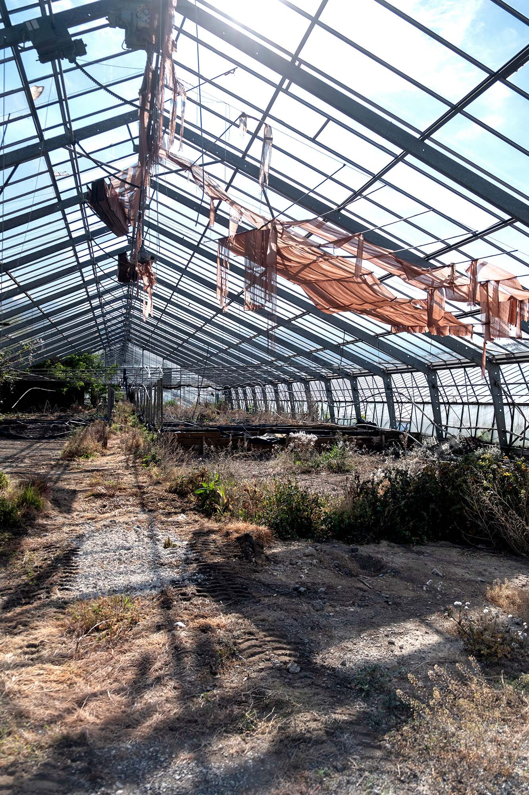
Le jour de notre visite, les Alpes sont encore nimbées d’une neige de printemps qui scintille au soleil. «C’est Orllati qui est propriétaire», confirme d’entrée de jeu un ouvrier occupé à des travaux de terrassement devant les serres. «Évidemment qu’il rêve de construire ici, mais je ne sais pas quand ce sera possible.»
« La vente devait avoir lieu au cinéma Rex de Vevey. Mais sur place on a appris qu’Orllati avait tout racheté la veille »— Un habitant de Lavaux
Selon plusieurs témoignages, cette acquisition porte également la griffe du lutteur Emmanuel Crausaz. Les parcelles concernées devaient être vendues aux enchères durant le Covid, à la suite de la faillite du propriétaire précédent. Deux vignerons étaient intéressés, mais impossible de régater: «Orllati a posé deux millions, et la vente a été annulée», souffle une source proche du dossier. Un habitant de la région ajoute: «C’est vraiment dommage de laisser ces serres à l’abandon. Des gens demandent souvent à la commune s’ils ne pourraient pas avoir un espace pour cultiver à l’intérieur.» Quant aux vignes, leur exploitation serait aujourd'hui sous-traitée à un viticulteur du coin.
Cet exemple est d'autant plus préoccupant que la Suisse romande vit actuellement une crise viticole. «Il y a autour de moi des situations qui deviennent dramatiques», commente un viticulteur de la région. «Et dans l’agriculture aussi. Nos revenus baissent et on a de moins en moins de moyens pour acheter des terres.» En Lavaux, le groupe Orllati a en outre fait parler de lui en projetant de construire un complexe immobilier sur un ancien site viticole à Treytorrens.
Nous avons contacté la fondation Franz Weber, qui couve Lavaux comme le plus précieux des trésors. Comment réagit-elle au fait que le groupe Orllati ait également mis la main sur les parcelles de Chardonne et Corseaux? «Avec inquiétude», nous répond Anna Zangger, membre de la direction de la Fondation Franz Weber et codirectrice d’Helvetia Nostra. «En principe, les parcelles colloquées en zone agricole (ou viticole) sont inconstructibles et doublement protégées, en Lavaux, par la Loi sur l’aménagement du territoire et la Loi sur le plan de protection de Lavaux. Il n’est pas impossible que certaines acquisitions puissent être une forme de spéculation immobilière, en espérant exploiter certaines exceptions légales.»
« Il n’est pas impossible que certaines acquisitions puissent être une forme de spéculation immobilière, en espérant exploiter certaines exceptions légales »— Anna Zangger, avocate membre de la direction de la Fondation Franz Weber et co-directrice d’Helvetia Nostra
L’avocate de profession s’interroge en outre sur «le mécanisme qui a permis à un groupe de promotion immobilière d’acquérir ces parcelles, même indirectement.» Selon elle, «ce type de montage mérite une vigilance particulière. Les communes et la Commission foncière doivent également prendre leurs responsabilités pour empêcher des projets immobiliers hors zone à bâtir, la protection de leurs villages et paysage, tout particulièrement en Lavaux, et éviter de manière générale le contournement des lois.»
Nous avons tenté de questionner la syndique de Chardonne, Maria Alice Reymond. Il n’a pas été possible de lui parler au téléphone, le greffe nous ayant fait savoir qu’il fallait envoyer les questions par e-mail. La secrétaire nous a ensuite répondu par écrit que «la Syndique a bien pris connaissance de votre demande et vous informe que ces questions relèvent du droit privé.» Quant au syndic de Corseaux, Christian Minacci, il n’a pas donné suite à deux courriels et un appel au greffe.
«Les élus sont les premiers à nous avoir abandonnés. Si eux ont peur, que voulez-vous que nous fassions?» demande un paysan désabusé qui a souhaité rester anonyme.
Yens : «Le premier fautif, c’est l’État»
Yens : «Le premier fautif, c’est l’État»
Agriculteur à la retraite, Charles-Henri Fuchs a vécu durant vingt-cinq ans avec sa femme et ses quatre enfants à la Flogère, un domaine enchanté situé dans le district de Morges. Propriété d’Henny Frères SA, le complexe est laissé à l’abandon depuis plusieurs années, à l’image des serres de Lavaux. Lors de nos visites, seules quelques vaches appartenant à un agriculteur du coin étaient présentes dans le hangar, et la ferme était envahie de végétation.

Sur un mur du salon (lui aussi immaculé) de l’appartement de Montricher où Charles-Henri Fuchs vit désormais avec son épouse, on trouve une photographie de l’exploitation durant ses grandes années. Arrivé en 1992, l’agriculteur était actif dans l’engraissement de taureaux et les cultures: blé, orge, maïs, colza. Il n’a jamais été propriétaire de la Flogère. Le domaine était en mains d’une héritière du groupe Von Roll, vestige d’une époque où les industriels s’offraient des biens agricoles — avant la Loi sur le droit foncier rural de 1991. «En 2013, une façade de la maison menaçait de s’effondrer», raconte Charles-Henri Fuchs devant une tasse de café. «La propriétaire a voulu vendre, pour 2,8 millions. Je n’avais pas les moyens d’acheter. Les banques ne prêtaient pas, et Prométerre ne me proposait qu’un franc le mètre carré, soit 350’000 francs.»
« Je n’avais pas les moyens d’acheter. Les banques ne prêtaient pas, et Prométerre ne me proposait qu’un franc le mètre carré, soit 350’000 francs »— Charles-Henri Fuchs, agriculteur
En tant qu’exploitant au bénéfice d’un bail à ferme durant de nombreuses années, Charles-Henri Fuchs aurait pourtant été prioritaire pour le rachat du domaine. Mais au lieu de cela, il a assisté, impuissant, à un étrange ballet: «D’abord, la maison bernoise Marti (active dans la construction, ndlr) est arrivée, avec un paysan de Lucerne nommé Urs Bernet. Je pensais qu’ils allaient faire une offre d’achat, mais ils ont seulement loué, et ce Monsieur Bernet m’a engagé comme employé durant quelques années, avant de résilier mon contrat au motif que je coûtais trop cher.»
Urs Bernet n’est pas n’importe qui. Selon un article publié en 2016 par la Luzerner Zeitung, il a été durant des années une figure majeure de l’industrie du gravier dans l’arrière-pays lucernois, ainsi que l’un des plus importants éleveurs du canton. On lui prêtait un rôle similaire à celui d’Emmanuel Crausaz, soit d'être d'un paysan au service d’intérêts économiques étrangers à l’agriculture.
La présence à la Flogère de cette personnalité alémanique, qui a depuis disparu des radars, n’est pas un hasard. Car ce domaine est situé au-dessus d’un important gisement de gravier, dans la prolongation du bois de Ballens, occupé en 2024 par des activistes du mouvement Grondements des terres. Les géants Holcim et Orllati s’y font la guerre pour la maîtrise des parcelles porteuses de revenus colossaux.
« Mon fils s’était déjà projeté dans une reprise de l’exploitation, donc ça a été plus dur pour lui que pour moi »— Charles-Henri Fuchs, agriculteur
À la Flogère, ce sont les hommes d’Orllati qui ont succédé à ceux du Bernois Marti. Sans surprise, Emmanuel Crausaz était présent lors de la visite en vue de l’acquisition, mais pas seulement. Selon Charles-Henri Fuchs, une personnalité de poids s’est également rendue sur les lieux à cette occasion: Pierre-François Veillon, qui fut conseiller d’État avant de retourner à son bureau de comptabilité et de gestion agricole à Bex, puis conseiller national jusqu’en 2015 sous la bannière de l’UDC. Un nom que l’on retrouve dans le cadre de la vente des Ursins, ce somptueux domaine situé dans le district de Morges dont Blick vous racontait l’histoire récemment. A quel titre l’ancien ministre était-il impliqué dans ces ventes? Contacté, il confirme avoir été «mandaté par la propriétaire pour vendre le domaine» et avoir eu «des contacts avec Marti dans ce cadre-là». Mais conteste tout lien avec le groupe Orllati par la suite.
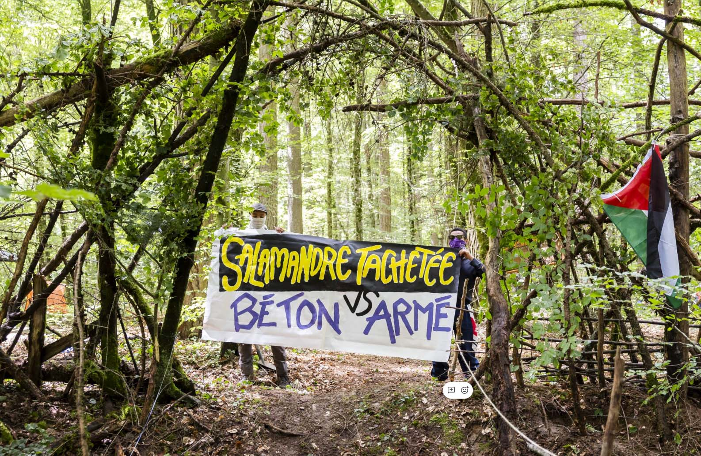
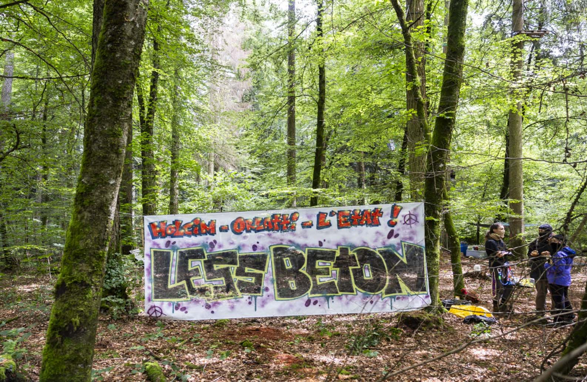
Contrairement à sa femme, qui n’a «jamais pu y remettre les pieds», Charles-Henri Fuchs est retourné plusieurs fois sur les lieux où ses enfants ont grandi. Parce qu’il «veillait à toujours garder tout en ordre», l’état d’abandon où la ferme a été laissée l’affecte. Mais cela s’arrête là. «Mon fils s’était déjà projeté dans une reprise de l’exploitation, donc ça a été plus dur pour lui que pour moi. Il serait du reste toujours intéressé à exploiter ces terres.»
Récemment, Charles-Henri Fuchs et son épouse ont été entendus par la commission du Grand Conseil qui planche sur les problèmes au sein de la Commission foncière rurale, révélés notamment par des enquêtes de Blick. S’il n’a pas beaucoup parlé, Charles-Henri Fuchs a tenu à s’exprimer sur un point qui lui tient à cœur «Je leur ai dit, aux gens de l’État: les premiers fautifs de cette situation, c’est vous.»
Le cas de la Flogère, qui avait été soulevé par heidi.news en 2020, a fait l’objet en 2023 d’une interpellation au Grand Conseil, rédigée par la députée Ensemble à gauche Mathilde Marendaz. L’élue citait également le domaine des Ursins, dont Blick a raconté l’histoire récemment. Dans sa réponse, le Conseil d’État évoquait deux procédures de révocation en cours d’instruction par la Commission foncière rurale «en lien avec les éléments exposés par l’interpellatrice». Selon nos informations, ces procédures seraient toujours en cours, mais impossible d’en savoir plus. Contacté, le Département de l’agriculture en mains de Valérie Dittli nous a renvoyés vers la CFR I. Quant à cette dernière, elle n’a pas répondu à nos questions.
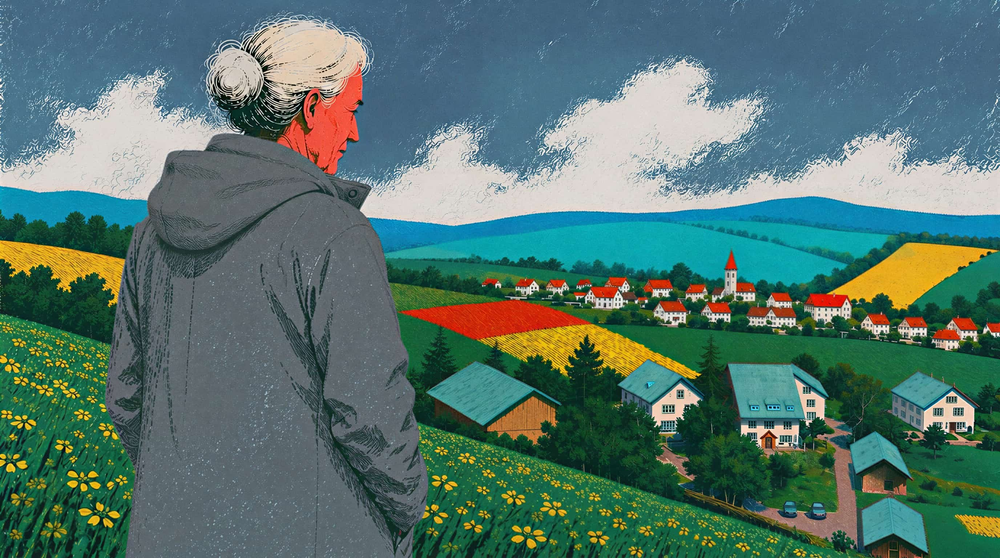
Lausanne : «J’ai 90 ans et je ne veux pas parler de ça parce que ça me rend triste»
Lausanne : «J’ai 90 ans et je ne veux pas parler de ça parce que ça me rend triste»
Pourquoi Orllati n’a-t-il pas acheté directement les terrains de la Flogère, sans passer par des paysans? En effet, la Loi sur le droit foncier rural comprend une autre exception: son article 64 stipule qu’il est possible de déroger au principe de l’exploitant à titre personnel lorsque l’achat a pour but l’exploitation des ressources du sol permise par le droit de l’aménagement du territoire, ce qui est le cas du gravier.
En théorie, Orllati aurait donc pu acheter la Flogère en tant qu’exploitant de gravière. Sauf que la loi comporte un obstacle de taille: si le terrain n’est pas utilisé dans les quinze ans à compter de son acquisition, il doit être revendu. Or, le domaine des gravières est mouvant, incertain, tendu et nécessite beaucoup de patience, comme l’expliquait Avni Orllati lui-même dans une interview accordée à l’émission Big Boss de la RTS en 2022 . La planification souffre notamment des rebuffades des citoyens, qui refusent de cautionner le béton ou la détérioration de leur environnement direct, comme dans le cas des gravières de Ballens et de La Chaux (Cossonay). Par ailleurs, un terrain acheté en vue de l’exploitation d’une gravière coûte beaucoup plus cher en raison des revenus qui pourront en être dégagés. Ici encore, mieux vaut donc acheter avec l’étiquette d’un paysan.
Outre les vignes de Lavaux et le domaine de la Flogère, Henny Frères a acheté plusieurs parcelles situées en zone agricole près de la zone industrielle de Vernand, dans l’Est lausannois. L’une d’entre elles aurait coûté plusieurs millions, car elle était grevée d’hypothèques. Au moment de l’acquisition, des terrains étaient exploités par un paysan, qui aurait pu se revendiquer du droit de préemption. Au lieu de cela, les parcelles ont été vendues à Henny frères SA, et l’agriculteur a signé un contrat pour pouvoir continuer à exploiter. Contacté, il n’a pas souhaité s’exprimer. De sources concordantes, le paysan n’avait pas les moyens financiers pour s’aligner. Ici non plus, ce ne serait donc pas Henny frères qui s'occuperait directement des terres.
Au cœur d’un hameau situé dans le secteur se trouve également une belle ferme, directement propriété d’Orllati Real Estate selon le registre foncier. On ignore si une exception à la loi a été activée ici par le promoteur. Mais l’histoire, relatée par le voisinage, est tragique: après le décès de la fille de la propriétaire, le beau-fils de cette dernière aurait revendu à son insu à Orllati, qui y logerait actuellement des ouvriers à l’étage. Contactée, l’ancienne propriétaire n’a pas souhaité s’exprimer: «J’ai 90 ans et je ne veux pas parler de ça, parce que ça me rend triste». On sait par contre qu’Avni Orllati s’est rendu régulièrement dans le hameau ces dernières années, pour tenter de convaincre les autres propriétaires de lui vendre leurs biens. Une veuve aurait ainsi reçu la visite du promoteur deux semaines après la mort de son mari.
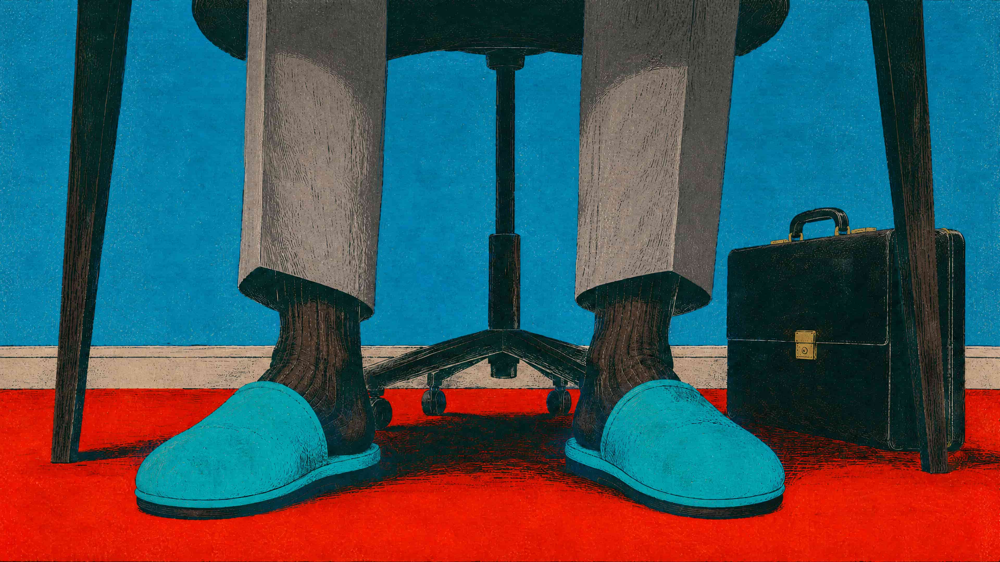
Le hameau et ses champs attenants, détenus ou convoités par Orllati, sont situés à côté d'une zone industrielle, où le constructeur nourrissait de grands projets de logements freinés par le Canton, à qui le Tribunal cantonal a donné raison en 2024. Ils sont au cœur d’un secteur clé dont le développement est en train d’être repensé. Une partie est en outre également située sur le site d’une décharge pour de la terre d’excavation des chantiers.
Ces situations sont d’autant plus questionnantes que le groupe de Bioley-Orjulaz vient d’engager le chef de la division Géologie, sols, déchets et eaux souterraines à la direction générale de l’environnement, Renaud Marcelpoix, ainsi que son adjointe. Un cas de pantouflage qui n’est pas une première: Par le passé, Orllati avait déjà mandaté comme consultant le géologue cantonal à la retraite, Jean-Daniel Dubois. Plusieurs années après son départ de l'État, le groupe avait également octroyé des mandats à l’ex-chef du Service du développement territorial, Philippe Gmür, qui se rendait également sur le terrain comme consultant indépendant. Dans un autre registre, Orllati a par ailleurs engagé en 2024 l'ancien DRH du CHUV, Antonio Racciatti, comme directeur des ressources humaines.
La planification et les autorisations dans le domaine de la géothermie, des gravières et des décharges sont gérées par la division que les deux fonctionnaires s'apprêtent à quitter. C'est dire si leur départ interroge quant à la protection d'informations sensibles et à de potentiels conflits d'intérêts.
Contacté, le Département de la Jeunesse, de l’environnement et de la sécurité (DJES), en mains de l’écologiste Vassilis Venizelos, nous répond ceci: «L’État prend très au sérieux la protection des informations sensibles ainsi que la prévention de tout risque de conflit d’intérêts. Dans le cas présent, des mesures ont été prises dès l’annonce de leur départ.» Il ajoute que les collaborateurs et collaboratrices sont soumis au respect du secret de fonction, ainsi qu’à des obligations de confidentialité, et que ces obligations «demeurent pleinement applicables après la fin des rapports de travail» — comme le prévoit le code pénal, rappelle le département.
Concernant les décisions de planification et d’autorisation, elles «reposent sur des procédures transparentes, documentées et soumises à plusieurs niveaux de contrôle administratif et politique. Ces dispositifs garantissent l’égalité de traitement entre les acteurs concernés et visent à préserver en tout temps l’intérêt public», selon le DJES. Il ajoute que «l’État ne peut ni ne doit empêcher une personne de poursuivre sa carrière auprès d’un employeur privé.» L’entreprise Orllati précise quant à elle qu’elle «engage ses collaborateurs pour leurs compétences dans le plein respect du cadre légal applicable.»
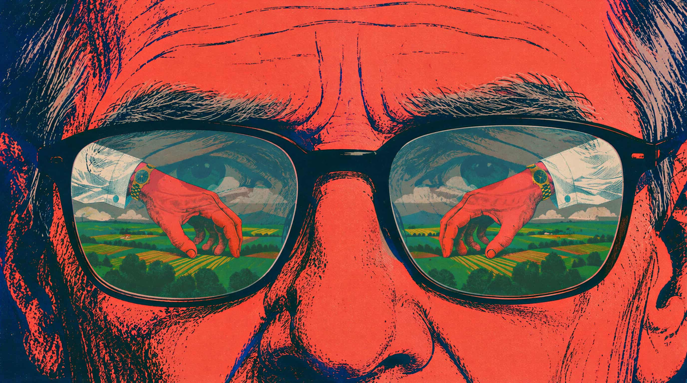
Jordils : «Vous ne vous intéressez qu’aux chauffards»
Jordils : «Vous ne vous intéressez qu’aux chauffards»
La société Henny Frères a acheté une vingtaine de parcelles agricoles pour un total estimé à plusieurs dizaines de millions de francs. Une société agricole nommée CRAFO SA, elle aussi administrée par Emmanuel Crausaz, est propriétaires de terrains à Eclépens, sur un site stratégique de développement d’activités industrielles en cours d’élaboration, jouxtant la voie de chemin de fer.
Un centre de traitement et de valorisation des scories de l’usine lausannoise Tridel, ainsi qu'une plateforme de valorisation et de recyclage des matériaux d’excavation devraient y voir le jour, comme le confirme Yvan Buehner, directeur de la société Cridec SA, qui a des intérêts dans le développement de ces parcelles industrielles: «Orllati nous a toujours confirmé qu’il maitrisait le foncier, sans que nous ayons connaissance de quelle manière.»
Jusqu’en 2024, CRAFO SA était présidée par une autre personne: Alexandre Fontannaz, qui n’est autre que le vice-syndic de Bettens, commune voisine de Bioley-Orjulaz, et chez qui la société est encore domiciliée. Contacté, celui qui est aussi caissier de l’UDC Gros-de-Vaud assure ne pas savoir ce qu’il faisait au sein de CRAFO et renvoie vers Emmanuel Crausaz. Nous avons également tenté de questionner ce dernier, qui n’était «pas intéressé» à nous répondre. Au cours de notre enquête, un grand nombre d’intervenants nous a fait savoir que si nous poursuivions la rédaction de cet article, ils déposeraient des plaintes pénales à notre encontre. C’est dire si le sujet est sensible.
« Pourquoi, alors que tout le monde respecte les limitations de vitesse, vous ne vous intéressez qu’aux chauffards qui roulent à 160 sur l’autoroute? »— Christian Aeberhard, secrétaire de la CFR I
Quant au neveu, il aurait été formé pour permettre au groupe Orllati de continuer à accéder à des terres agricoles, selon une source proche du dossier. Il administre depuis peu deux sociétés, l’une ayant pour but les travaux agricoles, et l’autre l’exploitation d'un atelier mécanique et l'importation de machines. Toutes deux peuvent par ailleurs acheter et vendre des immeubles et parcelles agricoles. Dans la seconde société, «le neveu» n’est pas seul: il est associé au jeune agriculteur chez qui il a effectué une partie de son apprentissage, ainsi qu’à… Emmanuel Crausaz.
Toutes ces situations questionnent sur l’absence de garde-fous et de contrôles. Comment la Commission foncière rurale a-t-elle pu adouber de telles opérations au service d’un grand groupe de construction? Et comment des paysans peuvent-ils prétendre cultiver des terres aussi loin de leur exploitation de base? La révision de la Loi sur le droit foncier rural va dans le sens de davantage de contrôles, pour vérifier notamment que les terres sont bien exploitées par la personne qui les a achetées. Aujourd’hui déjà, la Commission foncière rurale a dix ans pour invalider une autorisation donnée sous de mauvais prétextes. Le fera-t-elle concernant les parcelles de Yens, de Vernand, de Corseaux, d’Arnex-sur-Nyon ou d’Eclépens?
Interpellée en 2021 déjà par heidi.news, la CFR I avait promis qu’elle agirait rapidement. Son vice-président d’alors, Christian Aeberhard, qui est également cadre chez Prométerre, s’était tout de même plaint: «Pourquoi, alors que tout le monde respecte les limitations de vitesse, vous ne vous intéressez qu’aux chauffards qui roulent à 160 sur l’autoroute?». Cinq ans plus tard, rien ne semble avoir changé. La situation fait d’autant plus réagir que beaucoup d’agriculteurs ont été confrontés aux demandes de justification parfois très invasives que peut exiger la CFR I: «Ils vérifient jusqu’à la couture de votre pantalon», résume l’un d’entre eux.
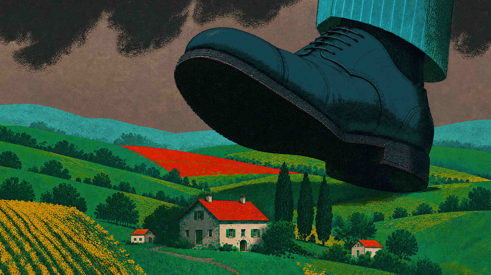
Epilogue : «Les plus petits disparaissent, les plus grands s’agrandissent»
Epilogue : «Les plus petits disparaissent, les plus grands s’agrandissent»
La problématique qui fait l’objet de cette enquête s’inscrit dans un contexte de «deux poids, deux mesures» au bénéfice des plus puissants, comme le résument plusieurs de nos interlocuteurs. Car beaucoup de personnes souhaitent acquérir des terres agricoles pour les cultiver, mais n’y arrivent pas. C’est le cas de «néoruraux», ces paysans qui ne sont pas issus du monde agricole et qui ont toutes les peines du monde à trouver un terrain exploitable à un prix décent. Et également des «héritiers évincés», soit les frères et sœurs qui sont restés sur la touche lors de la remise du domaine.
Selon une connaisseuse du dossier qui souhaite garder l’anonymat, «il faudrait élargir pour permettre aux néoruraux d’exploiter tout en serrant la vis autour de la spéculation. Le paysage agricole va changer radicalement durant les quinze prochaines années. L’Union suisse des paysans affirme que les prix sont limités par la Loi sur le droit foncier rural. Mais il y a un immense marché spéculatif sous le tapis. Résultat: les plus petits disparaissent, les plus grands s’agrandissent.» Cette situation offre également un boulevard aux entités extérieures au monde agricole. Car tous nos interlocuteurs confirment que «l’argent mignon» est monnaie courante dans ce secteur. «Sans ajouter une somme sous la table, vous ne pouvez pas acheter un terrain», est persuadé un paysan. «C’est un énorme problème.»
D’autres encore ambitionnent de devenir propriétaires de ce type de parcelles afin de les protéger, ce qui est possible en vertu de la loi. Mais dans la réalité, c’est une gageure, selon le secrétaire général de Pro Natura, Alberto Mocchi: «Notre organisation a acquis des centaines d’hectares de terres agricoles dans les années 1970. Mais aujourd’hui, la CFR I refuse systématiquement. Nous voulions par exemple acheter 20 hectares de terrain au Larzet, à Ormont-dessus. Ce sont des parcelles de prairies sèches qui ont une grande valeur en termes de biodiversité. L’idée n’était pourtant pas de les rendre à la nature - on n’a jamais fait ça - mais de les maintenir en exploitation.»
« Il faudrait élargir pour permettre aux néoruraux d’exploiter tout en serrant la vis autour de la spéculation »— Une connaisseuse du dossier
La facilité avec laquelle un groupe actif dans l’immobilier et la construction semble pouvoir acquérir certains terrains est d’autant plus frappante. «Pour nous, le fait que ce type d’entreprise ait accès à des terres agricoles pour y développer des gravières ou des carrières est une catastrophe», relève Éline Müller, secrétaire politique de l’organisation paysanne indépendante Uniterre. «Chaque mètre carré de terre agricole en Suisse doit être préservé pour l’agriculture vivrière, à savoir celle qui produit de l’alimentation.»
*Noms connus de la rédaction
Ces visuels ont été conçus par une personne et réalisés à l’aide de l’IA.